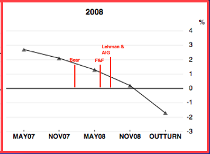
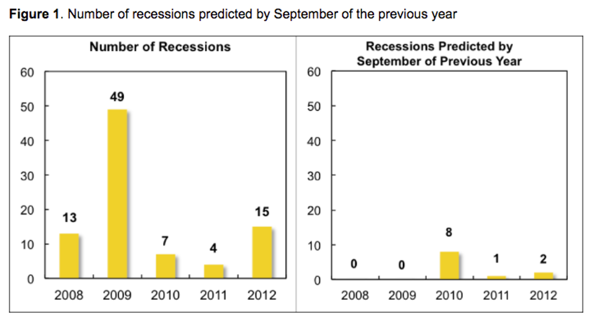
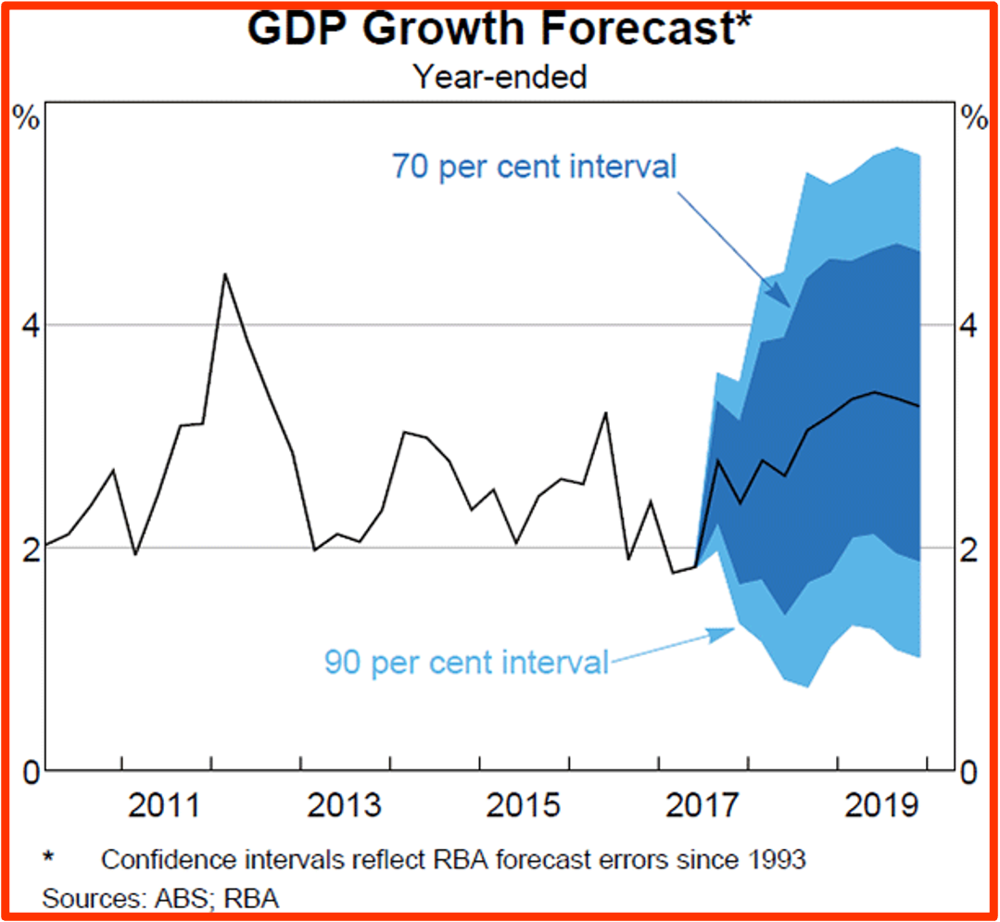
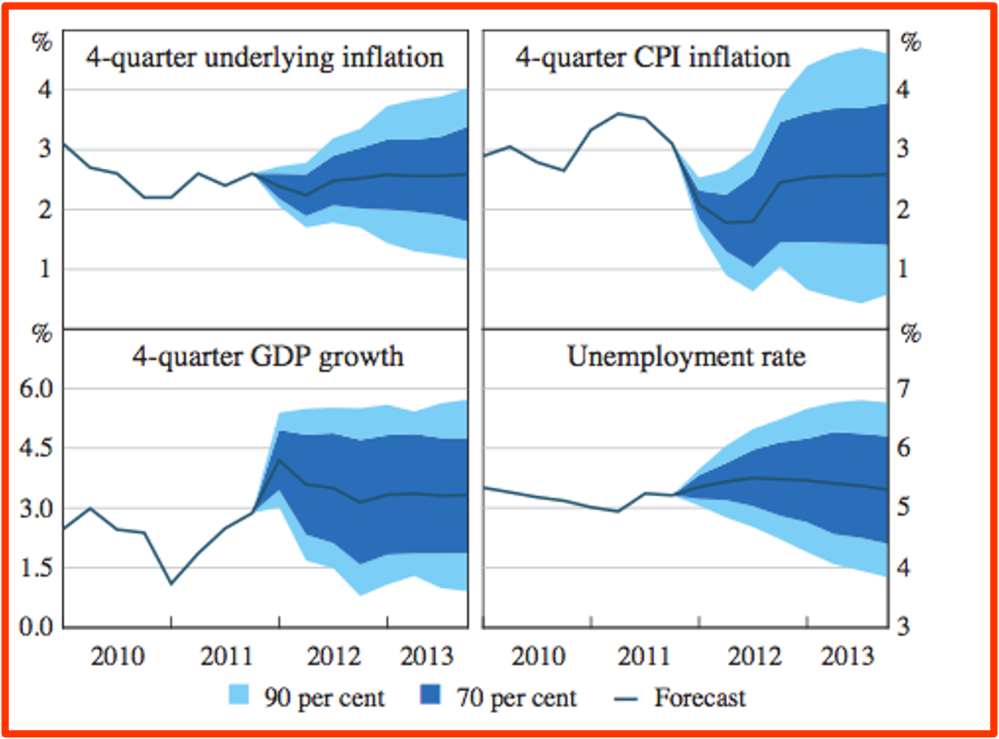

In late June this year CEDA asked me to reprise an earlier presentation I gave to them on forecasting. They also asked for a blog post which I also reproduce below. Add one more item to the Overton Juggernaut, my term for that unstoppable agenda of things we keep doing the way we are doing them, even though it's obvious we can do them better.
Why don't we do them better when people point out how? Well because. Because no-one is saying anything about it. Well, not no-one obviously. But no Very Serious People. And even if one Very Serious Person were to raise these issues, it probably takes a few more. As the Most Serious One Himself said: "I say unto you that where a Very Serious Person expresseth a notion, that notion may not yet be a notion, but when two or three Very Serious People are gathered in my name at a conference (especially one sponsored by The Australian, the Productivity Commission and maybe a bank) then verily, they are gathered in my name and the notion may join the great river of notions that everyone knoweth.”
https://youtu.be/ZYf61OPri_M
Why are we obsessed with forecasts? I’m not being flippant when I start with football. For as long as I’ve known, it’s seemed to me that the media space given to football in the 48 hours before the game seems to be about as much as analysis after the game.
If you think the main motive in taking up that space is informational, you’d have to confess it makes no sense. Will Dusty Martin play well on Saturday? We’ll find out then. Meanwhile, anything could happen. Better wait and see. But of course, football punditry is as much about entertainment as it is about information. It’s also about demonstrations of expertise and savvy. But let’s take the most knowledgeable football pundit in the country. Will he really be that much better at predicting how Dusty will go than I will? So, demonstrating one’s savvy is as much a social thing as actually adding value.
What about economic forecasts? There’s a whole discipline of economics to master, so presumably, expertise adds a lot more value. And there’s a lot more at stake. People want to know what the Reserve Bank of Australia (RBA) forecasts because they might be able to piggyback on their expertise in thinking about their own plans – whether they’re running a firm or a household or just their own personal budget.
And the RBA forecasts also help us work out how they might move interest rates next. But I’m sticking with that football analogy. It’s not perfect, but it’s much closer to the mark than you might think.
Here are some questions for you. Do you know how much value will be added by your attending to forecasts?
Do you know how to tell a good forecaster from a bad forecaster? Do you know whose forecasts have turned out better than others?
My forecast is that, if they were honest, most people, including those who pay quite a bit of attention to economic forecasts, would have to answer “no” to each question. So at least in terms of why people pay attention to them, economic forecasts aren’t that far from those ‘before the game’ football shows.
We’ve got an itch to know what the future will be like, so we find it endlessly entertaining speculating on how it might turn out as we turn the end of the kaleidoscope in discussion with one another and watch the crystals judder and our whole view of the future rearrange itself before our eyes. What if the China debt bubble bursts? What if rising US interest rates triggers new debt crises in poorer countries or increased trade deficits in America with intensifying trade war.
Forecasting and economists
At the same time, forecasting is something that economists fall into easily. They’re caught up in the entertainment, they’re keen to use their discipline and their knowledge to scratch that itch to know the future. And forecasting is the most canonical demonstration of economists’ august status as modern seers.
There’ve been lots of learned discussions about the value added in forecasting. But it wasn’t until Philip Tetlock’s pioneering research written up in his Expert Political Judgement, that more popular attention turned to the question of what forecasters add.
In case you missed the memo – the book came out thirteen years ago – Tetlock was focusing mainly on political judgement – for instance regarding future political and geopolitical developments.
In the upshot, Tetlock’s conclusions were sobering. He found that, even at their best, experts added only marginally to the accuracy of forecasts of educated lay people – or simple rules like (next year’s growth will be the average of growth this year and long run trend growth), and that there were plenty of circumstances where experts added nothing.
Indeed, he found that where experts had some singular preoccupation – say a Russia scholar was particularly enamoured, or viscerally opposed to Soviet communism – then that could often bias their predictions in such a way that made them less accurate than more dispassionate, but inexpert, forecasts.
In simply setting up the apparatus to investigate Tetlock’s subject, it became immediately apparent that to get any information about who was and who was not adding value in predictions, those predictions had to be nailed down. One had to get predictors to say precisely what their prediction was – tying themselves down to at least three things:
- objective descriptions of outcomes – e.g. “Mikhail Gorbachev will no longer be the functional leader of the Soviet Union”.
- Specification of timing – e.g. “within the next two years”
- With a probability – e.g. “23 per cent”.
If a forecast doesn’t tie itself down to such things, it gives us next to no information. As Tetlock points out, out in the wild, most political forecasting is plausibly deniable. If someone says "Mikhail Gorbachev’s political position will be seriously challenged next year", then when the time comes they can cast around for evidence that their prediction was realised.
The thing is in economics, the very nature of the material disguises this from us. Forecasts are typically point forecasts – for instance for GDP growth to be (precisely) 2.75 percent. Likewise, the forecaster will be expected to calibrate their forecasts with specified timing. Thus, a forecast would be that there would be 2.75 per cent GDP growth over a specified period such as a financial year.
That’s tied things down so we can find out precisely whether the forecaster got it right or not. What’s there not to like? Well, quite a lot actually. We haven’t asked the forecaster to tell us the confidence they suggest we have in their forecast.
To see why that’s a problem, consider a footy tipping competition. If your task is simply to pick the winner, then you need a lot of observations to generate good information about the extent to which a higher score is due to better forecasting or just luck.
On the other hand, where forecasters specify how confident they are of their prediction – for instance, I think Collingwood has a 55 per cent chance of beating the Gold Coast Suns next weekend – then over time comparing these forecasts with outcomes produces far more information.
One asks do teams win with about the frequency that is predicted by the forecasters. There’s more information in the forecast and that gives one much more to go on in comparing forecasts and outcomes and so in deciding which forecasters are adding value and which are having us on (and quite possibly themselves).
This is why betting markets elicit far more information than footy tipping – because if I think there’s a 55 per cent chance of Collingwood winning and you think it’s a 70 per cent chance, we can agree on odds that express our disagreement, place our bets and over any appreciable period of time better forecasters start eating worse forecasters' lunch.
There’s another problem with not specifying confidence or probabilities in one’s forecasts. Given the difference of opinion I’ve just outlined, if we’re in a footy tipping competition where correct forecasting gives us one point and incorrect forecasting leaves us empty-handed, then even though we have a different view on the likelihood of Collingwood winning the game, we’ll both make the same tip – Collingwood to win.
Sticking with the herd
Now the problem isn’t just that we’re not learning what we could about our different takes on the situation. If we were forecasting, we’d forever default to the lowest common denominator. To the most likely outcome. So, we stick with the herd. And in sticking with the herd, dissenting voices don't surface. No-one pipes up arguing that some outsider has a better chance than others think because, until someone judges them to have over 50 percent chance of winning, it's not in their interests to tip them.
And the way forecasting works, the incentives are very much the same. Over the long haul, the economy spends a small fraction of its time in recession. So, no matter how much it might keep you up at night, no matter how much it might nag at you until you can see the whites of its eyes, your best bet as a forecaster is to stick with the herd and not forecast a recession.
That’s exactly what we see.
Fig 1 shows the OECD forecasts for growth as one domino after another falls in the slow-motion disaster that was the Global Financial Crisis. But each time those in the herd just reduced their forecast growth a bit.
Figure 1: Forecasts as the dominos of the GFC fall 

Source: See https://www.oecd.org/eco/growth/Lessons-from-OECD-forecasts-during-and-after-the-financial-crisis-OECD-Journal-Economic-Studies-2014.pdf
Figure 2 shows the contrast between the number of recessions there are, and the number of recessions that are predicted by September of the previous year.
Figure 2: Number of recessions and the number of predicted recessions 
This is an even bigger problem when one realises that most of the time what we most want to know are unusual events – recessions, periods of unsustainable boom and turning points. And all those things are rare.
So, in a footy tipping competition, they’ll be predicted very rarely and to the extent they are predicted, they may not be predicted by the most rational forecasters – who will (rightly) doubt their own clairvoyance and respect the fact that, whatever their gut feeling, most of the time when we predict that something very unusual will happen – it doesn’t!
Perhaps that’s also an explanation for why we don’t rush those who have made different and often dire predictions – like Steve Keen – back into the fold once the more mainstream pundits have proven to be so off the mark.
To their credit, both the Treasury and the RBA do issue ‘fan charts’ such as those illustrated (Figure 3) that provide their level of confidence in their forecasts based on their own econometric investigations comparing their past forecasts to how things turned out.
Figure 3: Charts indicating degrees of confidence



* Confidence intervals reflect RBA forecast errors since 1993
Source: ABS; RBA
The good news is that Philip Tetlock has taken his work further. He’s shown us that in non-economic forecasting it’s possible to train people to forecast better and he’s discovered and also helped train ‘superforecasters’, who’ve disciplined themselves to proceed in a way that’s open-minded, careful, curious and, above all, self-critical. They also seek constant objective feedback on the reality of how the world is developing and on others seeking to forecast the same thing.
Disturbingly, economic forecasting has taken little notice of this. I recently conducted a word search on published content by the Treasury, the RBA and the Productivity Commission and could find just one reference to Superforecasting – in a thoughtful speech by Guy Debelle.
Still, even there, there seemed to be little appetite for some of the basic ideas of Tetlock – that would suggest forecasting in a context which, by comparing probabilistic forecasts we could identify out-performers, highlight their achievements and learn from them – not to mention identify the forecasters who were adding little. This is, after all, similar to what several of the best fund managers do. Those officers who aspire to manage funds keep sample portfolios where their own forecasting of future stock prices can be compared over time, both for comparison and to learn from.
And we should ask whether we’re forecasting the right things. Today, great store goes into quite small differences in forecasts of future economic growth. But at least for many people who pay attention to the Treasury’s and the RBA’s official forecasts, does it really make a lot of difference to them if the forecast is for real growth of 2.75 rather than 3 per cent in two years’ time?
Could we also attempt to forecast the changing likelihood of important changes in our economic trajectory – such as a substantial slowdown or a spike in interest rates? Certainly, at the outset, it would be hard to know how accurate such forecasts were. Perhaps real insight into the accuracy of such forecasts would remain elusive. But I think it’s worth trying to develop such forecasts.
If we held forecasting competitions of the kind I’ve discussed, we’d start to sort the forecasting sheep from the goats quite quickly. On the back of that, we could get competitors to specify their own estimates of the chance of recession over some given timeframe. It would take longer to get the data given the rarity of recessions, but even while we were waiting for the data to come in, we’d generate transparency of informed expectations of the likelihood of recession – a potentially valuable thing to know in its own right.
More generally, here and elsewhere, we could compare different forecasters forecasts to the eventual outcomes and so develop deeper knowledge of what works, why and who’s our best guide.
https://youtu.be/mrZqjMjsLIs
This article was first published by the CEDA blog.
I did exactly what you and Tetlock suggest (its a very old but of advice, way older than the 'pioneering' Tetlock: we should learn from our mistakes) a few years ago
http://clubtroppo.lateraleconomics.com.au/2013/12/27/predictions-versus-outcomes-in-2013/
the exercise told me a lot of things. One is about myself: how easy it is to believe something with great conviction and yet be wrong. The second is about others: the audience is only very seldom interested in the accuracy of predictions, because they have so little riding on it individually.
It thus taught me that if I wanted attention for being more right than others, I would have to manage to 'monetise' that ability in an arena where outcomes mattered. Like financial markets. Or new businesses. It is in the arena of investment and new products that predictive ability gets rewarded.
Thanks Paul,
And with building new businesses as opposed to investing, I'd argue that the real skill is usually not prediction – though obviously it often helps to have some idea of what kinds of changes are underway or likely – but good execution of some new(ish) idea. And even with investing, most good investors aren't that good at predictions, but rather at working out which companies are well run and well 'oriented' towards a future that most people will understand is likely.
There are two sorts of prediction: single factor prediction (FPs) and predictions about complexes (CPs). Evaporated water should condense and fall back to earth immediately =FP. The clouds moving in from the south probably will bring rain here tomorrow (CP).
FPs are often true but misleading as CPs because there are other true FPs involved that are too difficult to identify or enumerate or quantify or inter-relate to each other. Most of the true FPs we know have turned out to be true only within certain limits.
Most (all?) CPs are fuzzy or probabilistic, especially in relation to other CPs. Statistical data, critically analysed helps. Unfortunately we tend to think we understand CPs because they are familiar and understood in terms of familiar analogies and practices. Challenging them can be upsetting. People assume that their agents must know what to do but lack the will to do it. So they fall for dictators and dogmatists.
Can people be educated to realise predicting and acting are always a gamble, but that we can get some idea of the odds against us. In some cases not to act is the worst option, followed closely by dogmatic ideologies. Democracy depends on enlightened public opinion. We must develop institutions of public debate not governed by will to power.
Years ago there was a report about a investment firm in Hong Kong that( as well as the usual experts) had employed a Chinese Astrologer to select which-what companies to buy shares in. And that after a few years the Astrologer had done as well or even a bit better than the usual experts - I cant find that report its too long ago.
However I did find this story about a guy who has been running an astrology based investment firm for decades , does make you wonder no?
Nicholas It's a given that athority is most of the time huff, bluff and group think , so what's new??
Interesting straw in the wind from Tetlock and friends. Forecasting properly – confronting yourself with your ignorance – makes you more modest and a generally better humango.
Note to self: this piece – which I've not read, may be worth reading on returning to the topic.
See also this FT article
In Defense of Defensive Forecasting - Interesting post.